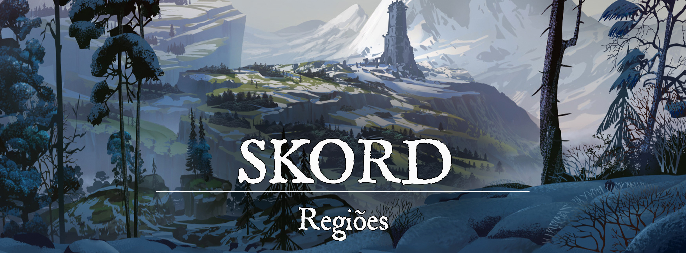

Skord
Descrição
Skord, um reino distante ao norte, frio e lar de temíveis guerreiros, é um lugar onde é necessário ser forte até para viver. Os bárbaros nortenhos de Skord são conhecidos por serem saqueadores e guerreiros de enorme força, homens e mulheres dispostos a lutar para viver mais um dia. Skord muitas vezes é visto como uma região de selvagens, no entanto, seu senso de honra e sua tradição é muito mais do que os olhos podem ver e é compreendido normalmente apenas por seus habitantes.
Geografia:
Localizado ao extremo nordeste do continente, Skord é uma terra congelada e montanhosa, com uma população frequentemente vivendo na costa. O frio é uma certeza durante o ano inteiro, mesmo após o fim do inverno (que costuma ser extremamente cruel). Em regiões mais ao norte, é possível encontrar neve o ano inteiro.
Sociedade
População:
Os humanos são a raça predominante em Skord, embora existam outros que se destacam na região, como é o caso dos Orcs e dos Golias.
Cultura:
A cultura de Skord foi fortemente influenciada pelos antigos gigantes e seus deuses. Diante de uma criatura de tamanha força e estatura, os skordianos perceberam que precisavam se esforçar o dobro para assegurar sua posição em uma batalha. Desde os primórdios de sua existência, a coragem sempre esteve presente no povo skordiano.
Foram com as runas de Sig’hor (o deus patrono dos gigantes) que os skordianos conectaram-se à natureza que os cercava. Com o simples poder das palavras, um homem era capaz de invocar o nome do fogo para aquecê-lo em uma noite fria de inverno, ou, em outros casos, usar relâmpagos como arma. O estudo das runas revelou muito da sabedoria dos gigantes para o povo skordiano, e mesmo após tantos milênios terem se passado, os homens continuam estudando e aprendendo o significado da herança de Sig’hor. Em Skord, as runas possuem muitos significados, mas todas estão conectadas de alguma maneira à natureza. Para os skordianos, as runas estão em todas as partes do mundo.
Os skordianos veneram todos os deuses gigantes e acreditam que cada um possui um propósito e significado no mundo. E além dos gigantes, os lobos também são considerados sagrados para os skordianos. Os lobos são um reflexo do próprio povo skordiano, além de também terem servido como companheiros durante toda a existência do reino. E mesmo após a morte, um lobo continua sendo útil ao povo com sua pele, ossos e carne.
Os militares de Skord escolhem um lobo quando ainda são jovens (crianças ou adolescentes). Quando o lobo morre, sua pele é transformada em um manto e, se o militar se tornar um oficial, ele recebe o manto de seu lobo em uma cerimônia. Se o soldado morrer, o lobo é levado para uma floresta. O destino do lobo é quase certo: morrer por não pertencer a nenhuma alcateia.
Outra tradição de Skord é em relação aos seus sobrenomes. É muito comum que os skordianos carreguem o nome do pai ou da mãe seguido pelo sufixo “son” ou “dottir” (filho e filha na língua gigante) como seus sobrenomes. Homens carregam o nome do pai, enquanto as mulheres, a da mãe. No entanto, em situações específicas (como o exílio do parente ou abandono), tanto o nome do pai quanto o da mãe podem ser usados por ambos. Não há qualquer preconceito com mulheres que usem o nome do pai ou homens que usem o da mãe como sobrenome em Skord. (exemplos de nomes: Sigvar, filho de Thorstein, utiliza o sobrenome Thorsteinson. Eir, filha de Hervor, utiliza o sobrenome Hervordottir.)
Caráter:
É fácil para um forasteiro deduzir que o povo skordiano é bárbaro, o que não é uma completa mentira. Contudo, esse povo está longe de ser os selvagens que muitos acreditam que são. Skord é lar de um povo forte e corajoso, que lutou por milênios para viver mais um dia, sem jamais abandonar seus costumes mais antigos. Os skordianos valorizam seus antepassados e seus costumes mais antigos. Também são desconfiados de forasteiros, mas apenas por terem sofrido muito nas mãos de invasores.
Economia
Em muitas regiões, a terra de Skord não é apropriada para o cultivo. O povo acaba vivendo da pesca e da agropecuária, e em alguns casos, de pilhagens em regiões mais ao sul. Os piratas de Skord também são bem conhecidos em algumas regiões, temidos bastante na costa leste do continente.
Governo
O Rei é aquele que governa as terras gélidas de Skord, mas seu título não é passado hereditariamente. O rei skordiano, ao fim de sua vida, convoca os senhores de sua terra para que enviem seus campeões ao Templo de Uppsala (um templo distante ao norte, nas montanhas), onde cada um irá derramar seu sangue na madeira de uma árvore sagrado, o Freixo dos Reis e irá pendurar um objeto de valor em seus galhos. Cada um desses campeões, seja o filho de um jarl, um soldado ou pescador, se colocará em uma missão perigosa (que pode ser declarada ou não qual será) para se provar digno do trono de Skord. A decisão de quem assumirá o trono, no entanto, não é feita pelo rei, mas sim pelo Freixo dos Reis no Templo de Uppsala. A árvore irá sangrar em cima do objeto do próximo rei de Skord, indicando que ele foi digno de trono através de sua missão.
Poderio Militar:
Skord não possui nenhuma muralha que os separe do sul. Ao invés disso, a região fronteiriça é vigiada por patrulheiros que se espreitam por florestas e montanhas, sempre acompanhados de lobos treinados.
Os skordianos são conhecidos por possuírem o machado como arma preferida e também por serem ótimos marinheiros. A frota naval de Skord é poderosa.
Conflito
Um dos maiores perigos da região é a própria natureza. Skord não é lugar agradável com seu clima, com suas feras (como lobos gigantes, dragões brancos e um Megatron congelado), com sua terra majoritariamente infértil por milênios de guerra constante e por seus próprios habitantes, que mesmo estando em paz, rapidamente encontram um motivo para travar pequenas batalhas entre si. O povo da região costuma ser rápido em desconfiar de forasteiros sulistas (o que não significa que são imediatamente hostis), especialmente aqueles que aparentam ser de Ascalon.
Organizações Relevantes
Selvagens Ulver: A maioria dos povos de Skord decidiu seguir Cregan na unificação da região, no entanto, houveram aqueles que continuaram a se opor à aliança. Rechaçados ao longo dos séculos, os Ulver se separaram em pequenas tribos e se isolaram nas montanhas. Os Ulver frequentemente atacam vilarejos e viajantes nas estradas de Skord.
Locais Relevantes
NPCs Relevantes
unknown (87).png |Rainha Eir Hervordottir, a Troca-Peles
{kind=link}
Rainha Eir Hervordottir, a Troca-Peles: A Rainha Eir é o que os skordianos chamam de troca-peles, pessoas com a capacidade de assumir o aspecto de bestas poderosas. Eir consegue se transformar em um urso gigantesco e, com esse poder, matou o Rei Urso, um criminoso também troca-peles que matou dezenas de skordianos.
Cregan, o Rei Montanha: Cregan foi o rei que unificou todas as tribos e consolidou Skord. Também foi um grande estudioso das runas de Sig’hor.
Brandon, o Vermelho: Um herói que lutou sua vida para se tornar rei. Brandon esteve presente na Batalha do Sangue Negro e morreu como um herói de guerra. A própria Árvore de Skord sangrou por Brandon, que foi consagrado como o Rei Vermelho mesmo sem jamais ter sentado no trono.
Rei Harald, o Remador: O Rei Harald foi um grande herói para Skord, cujo feitos salvaram inúmeras vidas. Seguindo a tradição, o Rei Harald convocou os campeões dos jarl de Skord para competir pelo trono.
Origem
Primeiro Refúgio (1 ~ 12.000) Os gigantes de gelo foram os primeiros senhores de Skord, um povo nômade que deixou como o único resquício de sua estadia enormes pedras talhadas com runas. Nessa época, os gigantes e os dragões estavam lutando entre si pelo domínio de Pheros, mas as terras de Skord eram um refúgio para ambas as raças. Quando a batalha terminou, os gigantes isolaram-se em cavernas e montanhas distantes, mas muitos também começaram a brigar entre si pelo menor dos recursos. Além de terem sido os primeiros senhores de Skord, os gigantes de gelo também foram os primeiros a derramar sangue nessa terra distante.
A Conquista (por volta de 13.000) Com o fim das grandes batalhas que consumiram Pheros, houve a segunda criação de raças. Essas raças, ainda jovens e primitivas, começaram a explorar o mundo ou a submeter-se ao domínio élfico de Elselenor em expansão. Poucos se interessaram por Skord, uma terra fria e distante, dominada por gigantes de gelo e lobos atrozes. Aqueles que decidiram transformar Skord em um lar, no entanto, não recuaram diante da força sobre humana dos titãs. Muitas batalhas foram travadas contra os gigantes, mas os humanos passaram a conhecer aquela terra e as bestas que a habitavam. Tornaram-se companheiros dos lobos e do inverno, aprenderam a como batalhar contra a força dos gigantes, e então foram capazes de tomar o lugar para si. Os gigantes de gelo, cansados por milênios de guerra, recuaram para qualquer canto em que pudessem se isolar, abandonando de vez a terra gélida de Skord.
Os Primeiros Reis (13.000 ~ 23.000) Os primeiros reis skordianos não eram muito mais do que senhores de guerra bárbaros. Com os gigantes derrotados, cada homem decidiu tomar um pedaço da terra para si, e os mais fortes foram acompanhados de muitos outros guerreiros. Na maioria dos casos, os reis skordianos viviam isolados em terras que proclamavam ser suas, aventurando-se em regiões distantes apenas quando precisavam de recursos. Os poucos relatos que existem dessa época estão talhados em pedras rúnicas escritas pelos últimos gigantes de gelo remanescente em Skord, que escreviam apenas o pouco que compreendiam.
A Tempestade (por volta de 23.000)Houve uma época sombria em Skord em que, de acordo com relatos antigos, a tempestade se descontrolou e começou a consumir a região. Vilas foram destruídas pela chuva ou por relâmpagos, e os reis ficaram sem saber o que fazer. Apenas um dos antigos reis skordianos buscou entender o motivo da raiva da tempestade: Cregan, o Rei Montanha. Cregan buscou entender as runas de Sig’hor encontradas em ruínas ancestrais dos gigantes, e eventualmente descobriu o que estava causando a tempestade e uma maneira de acalmá-la. O lendário gigante, conhecido como o Rei da Tempestade, estava insano em sua fortaleza nas montanhas, e precisava ser derrotado para a tempestade se acalmar indefinidamente.
Cregan viajou com seus guerreiros e visitou cada rei conhecido de Skord para apresentar uma maneira de parar a tempestade. Ele pararia a tempestade para cada povo com a condição de que fosse aceito como o único rei de Skord, e que homens fossem enviados com ele para derrotar o Rei da Tempestade. A maioria dos antigos reis recusaram a oferta e foram hostis a Cregan, mas não podiam derrotá-lo, pois Cregan sabia como invocar o nome da tempestade e, por isso, era invencível. Quando finalmente fez cada rei se ajoelhar, Cregan partiu para enfrentar o Rei da Tempestade.
Apesar da companhia de seus homens, eles não foram capazes de seguir Cregan até o fim da jornada. O Rei Montanha enfrentou sozinho o Rei da Tempestade, mas saiu vitorioso e foi capaz de acalmar a tempestade que consumia Skord. Com a derrota do Rei da Tempestade e a unificação de Skord, os antigos povos começaram a cooperar pela primeira vez para construir um novo lar.
Os Futuros Reis de Skord (por volta de 23.000) Houve um longo período de paz em Skord após a vitória de Cregan, o Rei Montanha. A capital de Skord começou a ser construída e foi onde Cregan se estabeleceu. Os skordianos começaram a estudar as runas que Cregan descobriu, mas ninguém foi capaz de compreendê-la da mesma maneira que o rei as entendia. O Rei Montanha envelheceu e percebeu que não poderia governar por muito mais tempo, então proclamou que sua posição não seria hereditária, mas que um campeão seria escolhido por cada um dos jarl de Skord. Os campeões aceitariam missões perigosas para se mostrarem dignos do trono. Skord seria governado por um rei forte e digno, não importando de quem fosse filho. Alguns jarl deram preferência aos seus filhos mais fortes, enquanto outros escolheram campeões locais, mas todos seguiram e respeitaram a decisão de Cregan. Até os dias atuais, Skord escolhe seus reis desta maneira.
Primeira Era: Marcha Áurea (de 1.203 à 1.288) Skord consolidou-se como nação ao longo dos milênios. Muitas batalhas foram travadas contra invasores ou monstros, mas os skordianos sempre prevaleceram. A guerra mais sangrenta que Skord enfrentou foi contra Ascalon e sua Marcha Áurea feita por um Pontífice insano.
Os ascalonitas invadiram Skord e conquistaram vilas e cidades para impor seus costumes. A própria capital construída por Cregan e seus homens foi conquistada durante essa guerra, mas houve uma longa resistência por parte dos skordianos. Os ascalonitas também sofreram com uma campanha de guerra tão longa. Ser mandado para lutar em Skord era como uma sentença de morte. Os skordianos, conhecedores de seu próprio terreno e acostumados com o frio intenso da região, infernizaram os ascalonitas por anos.
A guerra durou quase um século e esgotou o exército ascalonita. O Pontífice insano que declarou essa Marcha Áurea e o rei que a acatou haviam falecido antes mesmo de contemplar o fim da guerra. Quando ficou claro que a Marcha Áurea havia perdido seu significado nessa guerra, os ascalonitas recuaram. Desde então, os skordianos nunca esqueceram esse cruel período.
Primeira Era: Dias de Tormenta Ascalon havia recuado para sua terra e os skordianos tentavam se recompor e reconstruir seu lar. Apenas alguns mais tarde, iniciou-se os Dias de Tormenta com muitos demônios invadindo Pheros através de uma fenda abissal. Por estarem tão longe ao norte, os skordianos presenciaram muito pouco do conflito contra os demônios, mas também precisaram lutar.
O rei daquela época já era um homem velho e com pouca força restante, então logo ergueram-se novos campeões almejando o trono. Um desses campeões foi Brandon, o Vermelho, um herói bárbaro que se aventurou ao sul e tomou como missão fechar a fenda demoníaca. A campanha de Brandon foi duradoura, e ele realmente esteve presente na Batalha do Sangue Negro, mas jamais se tornou rei. Brandon, o Vermelho, morreu na batalha final para fechar a fenda em um enorme sacrifício que salvou centenas de vidas. Para Brandon, um verdadeiro rei lutava e morria pelo seu povo, e seus camaradas de guerra eram mais do que dignos de seu sacrifício. Tal sacrifício foi reconhecido pelos próprios galhos da Freixo dos Reis. Mesmo após sua morte, Brandon foi eternizado como O Rei Vermelho.
Segunda Era
A antiga tradição skordiana perdura na terra, mesmo após tantos séculos terem se passado. Com a recente morte do Rei Harald Thorsson, o Remador, novos campeões surgiram para alcançar o trono de Skord. Eir Hervordottir, a Troca-Peles, tornou-se a rainha de Skord após a morte do Rei Harald.